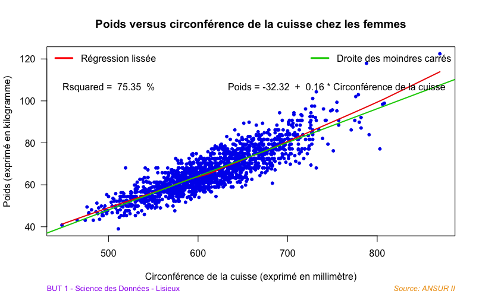
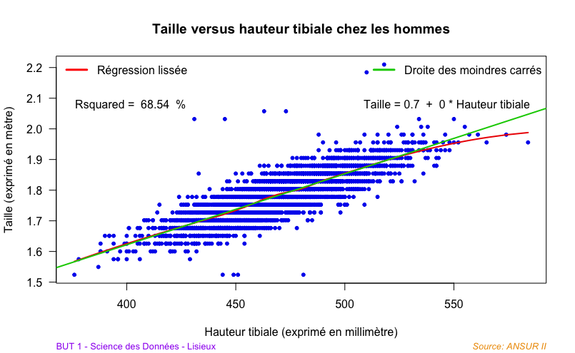

Ce projet visait à identifier les variables morphologiques les plus pertinentes pour expliquer le poids et la taille des soldats de l’armée américaine, en s’appuyant sur le jeu de données ANSUR II. L’étude porte sur la corrélation entre diverses variables quantitatives, en tenant compte des différences selon le sexe. Les analyses ont été réalisées sous RStudio, en utilisant le coefficient de détermination R2 pour quantifier la qualité des corrélations
En ce qui concerne le poids, ce sont principalement la circonférence de la poitrine, de la cuisse, et de la taille qui montrent une forte association. Néanmoins, l’ordre d’importance de ces variables diffère entre hommes et femmes.

Pour la taille, les variables morphologiques les plus liées sont la hauteur tibiale, la longueur du pied et la circonférence du poignet. Contrairement au poids, l’ordre d’importance est identique pour les deux sexes.

Rapport et scripts d’analyse R disponibles ici.